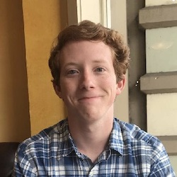

Katherine will graduate in 2019 with a double major in art history and German. She spent the summer of 2019 in Florence working on the project. She has presented Florence As It Was at the UNRH Conference in 2018 and at the Frick Collection in 2019. She has studied abroad in Siena, Italy, Berlin, and Göttingen, Germany. On campus, Katherine is a member of Kappa Alpha Theta sorority, the Outing Club, and ODK. During her free time Katherine enjoys travel, cooking, reading, yoga, and spending time outside with friends.
Katherine mostly translates Paatz’ Die Kirchen von Florenz and updates the 2D map. She also enjoys modeling altarpieces and working on site maintenance.
KD

Win Gustin, class of 2020, is a European History major and Creative Writing and Philosophy double minor. He’s from Mobile, Alabama and knows English and French. Win has studied abroad in Paris, and hopes to go to Florence to work on the Florence As It Was Project in the summer of 2019. Win is the Vice President of the French Speaking Organization and the Secretary of Generals’ Unity (Washington and Lee’s LGBT organization), and he has acted in Dracula, 1984, and The Cherry Orchard at W&L. In his free time, Win enjoys writing short stories and novels, hiking, alternate history, and acting.
On the project, Win helps with site updating and maintenance, and he also works with integrating virtual reality technology into the Florence As It Was project.
WG
Haochen Tu from Suzhou, China is a Business Administration major student at Washington and Lee University with the expected graduation date of 2022. Haochen also plans to minor in Computer Science and Renaissance Study. Haochen came to America alone after she finished middle school in China. Haochen speaks Chinese, English, Spanish and is currently learning Italian. She will study at Bocconi University in Milan, Italy in fall, 2019. Outside of class, Haochen is the co-founder and Vice-President of Badminton club, executive member of Polo Team, member of Venture Club and General Activities Board. Haochen is also a Soprano I at W&L’s all female choir. Haochen is a big fan of the Harry Potter series and she loves watching films and traveling around the world.
Haochen has a strong spatial imagination and is good at 3D model design from virtual reality. For Florence As It Was, she mainly works on the construction of 3D models of buildings built at the 14th-15th century in Florence As It Was by the use Autodesk Recap. Haochen loves her job and ready to learn and contribute more in the future.
HT

Miles graduated in 2017 a Global Politics and English double major. Born and raised in Lexington, VA, he has spent a year in Florence, Italy, and an additional semester abroad in Rome, Italy, where he took courses in Italian and Art History. Miles is a member of Beta Theta Pi fraternity, played soccer for Washington and Lee for three years, and served as a Peer Counselor on campus.
Having lived in Florence, Miles assisted with the 2D Mapping aspect of the project, as well as working on several of the Italian sources, such as the Carocci Map.

From New York, New York, Sonia graduated with a double major in Art History and Medieval & Renaissance Studies and a minor in German. She undertook two thesis projects, one of which deals with appropriationist art of the 1980s and the other looks at conceptions of spatial mapping in Early Modern Florence. She has spent time abroad in Münster, Germany; Florence, Italy; and Paris, France improving her German, Italian, and French. Sonia served as the Secretary of the Student Body at Washington and Lee and is a member of Pi Beta Phi sorority. In her spare time, she enjoys spending time with friends and reading The New Yorker.
Sonia helped to establish and refine the project’s initial goals, from the planned nature of the VR experience, to the educational benefits of the 2D mapping aspect. She contributed research pertaining to Florence that appeared in her senior thesis, worked on the 2D map alongside Miles and Dave Pfaff, and translated Paatz’s German notes on the Bigallo.
SB

Hailing from the humid hamlet of rural Molino, FL, Colby Gilley is a current sophomore at Washington and Lee University. While he naturally gravitates towards humanities classes at W&L, he is enamored by all facets of the human experience. His potential major is still undeclared, but he has pronounced his investment in the University’s community, serving as a member of the FYOC, a University Big, and a leader on the Friday Underground team. Colby appreciates dusty old bookstores, the scent of wisteria on April evenings, and the sound of a reverberated guitar.
CG

Mary Catherine hails from the icy Erie, Pennsylvania, and currently attends Washington and Lee University as a member of the class of 2019. She is pursuing a BA in Studio Art and Computer Science, with an independent focus on digital design. With these skills she hopes to produce 3D models for different varieties of interactive entertainment. She has spent time abroad in Florence, Italy, and is familiar with the city as a whole. Mary Catherine is a member of the Pi Beta Phi sorority, the Washington and Lee Students Arts League, as well as the Alpha Phi Omega service fraternity.
MCG

From Dallas, Texas, Sam Joseph is a junior at Washington and Lee University. Before attending Washington and Lee, he took a gap year and lived in Ho Chi Minh City, Vietnam, where he taught English, cooked for and worked with orphans and in hospitals. Majoring in Art History, minoring in Classics, and focusing on his independent Engineering and Physics studies, Sam plans to attend architecture graduate school. Through Florence As It Was, Sam conducted project research in Florence, Italy. For six weeks, he worked in the Kunsthistorisches Institut library and photolibrary. He translated Medieval Latin documents and took pictures for photogrammetric modeling. As a part of Dr. Uffelman’s Technical Examination of 17th-Century Dutch Paintings course, Sam studied abroad in the Netherlands. Consequently, he has pursued the subject of digital archaeology and conservation and its relation to the Florence As It Was project. Sam headed the project’s 3D modeling division.
Sam created the first models for Florence As It Was, including the flagship model of the Bigallo and the numerous niches of Orsanmichele. He also helped write the FLAW guidlines and methodology, translated scholarly sources from Medieval Latin, and shaped the project’s goal from the very outset. Finally, Sam assisted in training MC Greenleaf for the 3D modeling project division.
SJ

Aidan is a Medieval & Renaissance Studies and Art History double-major and Classics minor at Washington and Lee. He has studied Italian, French, and Latin and spent the summer working on Florence As It Was and practicing his Italian. On-campus, he spends much of his time working on Digital Humanities projects involving the University’s Special Collections archives, where he worked during the summer of 2016. In Fall semester 2017 he was appointed to the Digital Humanities committee. Outside the classroom, he enjoys participating in Catholic Campus Ministry, rehearsing with the University Singers, and seeing plays at the Blackfriars in Staunton with the Shakespeare Society.
Aidan works mainly on the website–design, organization, troubleshooting, and general maintenance. He also translates documents to and from Italian, and contributes essays such as the ones he wrote for the Bigallo.
AV

George R. Bent received his Bachelor of Arts Degree from Oberlin College in 1985 and his Ph.D in Art History from Stanford University in 1993. He came to Washington and Lee University in that year and has been a member of the faculty ever since. Bent teaches courses in Medieval and Renaissance art history, and specializes in fourteenth- and early fifteenth-century Italian art and culture. He co-founded Washington and Lee’s interdisciplinary program in Medieval and Renaissance Studies, chaired it from 2000 to 2003, served as Associate Dean of the College from 2003-2006, and chaired the Department of Art and Art History from 2001 to 2003 and 2008 to 2014. A two-time holder of Fulbright grants to Italy, he has written about artistic production, the function of liturgical images, and institutional patronage in early Renaissance Florence. He addressed these subjects in his book Monastic Art in Lorenzo Monaco’s Florence (published in 2006) and in his DVD lecture series, Leonardo da Vinci and the Italian High Renaissance, produced by the Great Courses Company in 2012. He then focused his scholarly attention on the subject of art for common viewers in late Medieval Florence between 1280 and 1430: his book on this material, Public Painting and Visual Culture in Early Republican Florence (Cambridge University Press), was published in 2016.
GB.

Mackenzie Brooks is Assistant Professor and Digital Humanities Librarian at Washington and Lee University. Prior to her current position, she worked as Metadata Librarian at W&L and at the Loyola University Chicago Health Sciences Library. As a member of the Digital Humanities Action Team, she advises faculty and students on best practices for metadata standards in digital humanities projects. Additionally, she teaches undergraduate courses on scholarly text encoding and digital humanities.

Erik Gustafson received his Ph.D. from the Institute of Fine Arts, New York University in 2012. Currently a Visiting Assistant Professor of Art History at Washington and Lee University, he has taught at George Mason University, Fordham University, and the University of California, Berkeley, and held a Rome Prize fellowship at the American Academy in Rome from 2007-2009. An architectural historian of medieval and renaissance Europe and the Mediterranean, Erik is broadly interested in the engagement of historical viewers with architectural space. He is particularly interested in the phenomenology of historical religious experience, and in how the constant dialogue between traditions of the past and the needs of the present produced architectural culture. Erik has forthcoming articles on Franciscan architecture as charismatic space and on a Crusader portal reused on a Mamluk madrasa in Cairo, and is completing a monograph entitled Building Franciscanism: Space, Tradition, and Devotion in Medieval Tuscany.

Dave Pfaff is the coordinator for Washington and Lee’s IQ center. He works to foster cross-disciplinary and quantitative approaches to inspire creativity and problem solving in teaching and research. Without his incredible knowledge and willingness to help our team, this project would not be possible.